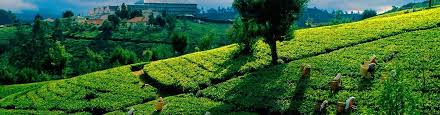

Ceylon Tea is a popular Black Tea which is also recognized as Sri Lankan Tea. It is served as Iced Tea or Warm, also most favourite beverage for many Tea drinkers. Most drink Tea in the Morning or Afternoon. Ceylon is known for its bold flavor, can vary significantly in taste depending on the type and where its grown in the Country.
|
Ceylon (say-lawn) tea is a tea made in the island nation of Sri Lanka, formerly known as Ceylon.
Sri Lanka is small, but it has an incredible variety of elevation, climate, soil type, plant varieties,
and weather, so the flavors and character of the teas produced there vary a lot. Despite the regional
variations, the classic Ceylon flavor is commonly thought to be bold, complete and brittle. It has medium to full
tannins and several notes of citrus, chocolate, or spice.
|
 |